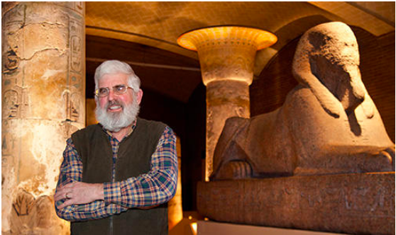
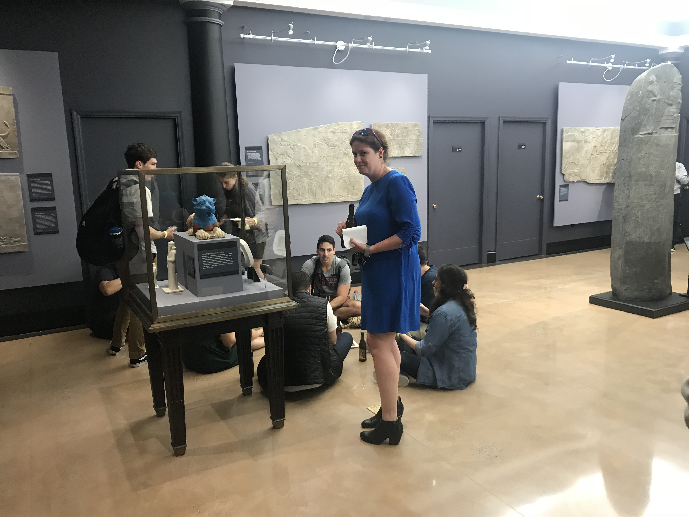
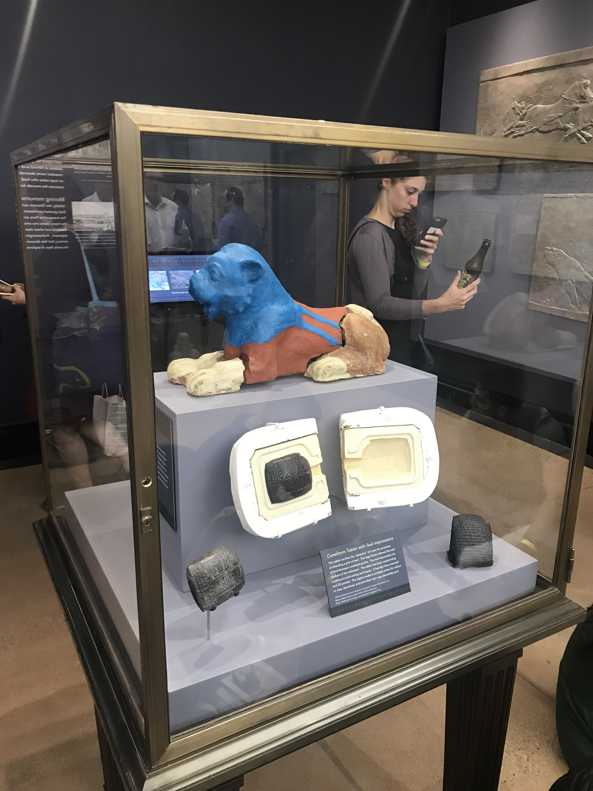
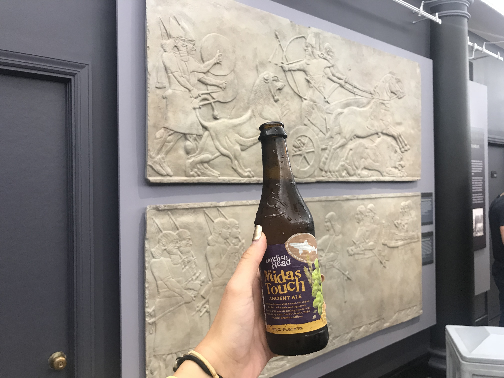

He ventures back to the beginning. Drawing on archaeology, chemistry and other sciences he discussed the earliest known brews and focused on interesting facts like humans sharing genes with other animals that prove we’re not the only ones hooked on getting buzzed. Brewing beer and other fermented beverages have been a crucial activity for humans and societies of the past 10,000 years. McGovern emphasized how fermentation is an essential part of life and has had a profound effect on what we are today. Following his lecture, we attended a Mesopotamian-themed reception in the Harvard Semitic Museum where we sipped on his famous brews paired with Mesopotamian-inspired treats.


